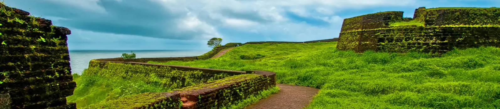

The 300 years old defensive mechanism which is the largest and well-preserved fort makes it one of the best Kasaragod tourist place. You can get an enthralling view of the mesmerizing Arabian sea from the fort’s observation tower which was once used to fire the cannons!

Kasaragod
Off the radar for commoners and the land of exquisite folk art, tourist places in Kasaragod are reserved for hardcore and offbeat travelers in troops, pair or alone any time of the day and year. Early morning while your vision is still hazy your ears will automatically attune to the blissful soundscape. Hosting numerous forts, wildlife sanctuaries, temple protected by a ‘croc’ - say the locals and magnificent hills, Kasaragod is uptown in all aspects. The ultimate traveling destination, has it all to enchant you. The natives are very friendly and the harmony between people of various religions is to be highlighted. A rare district in India housing seven languages and vivid appreciable cultures. Also, experience the Malabar coastal winds you have been reading about in Geography all this while. Get set to be awestruck and jaw dropped to find manmade and nature blend at its best at Kasaragod.